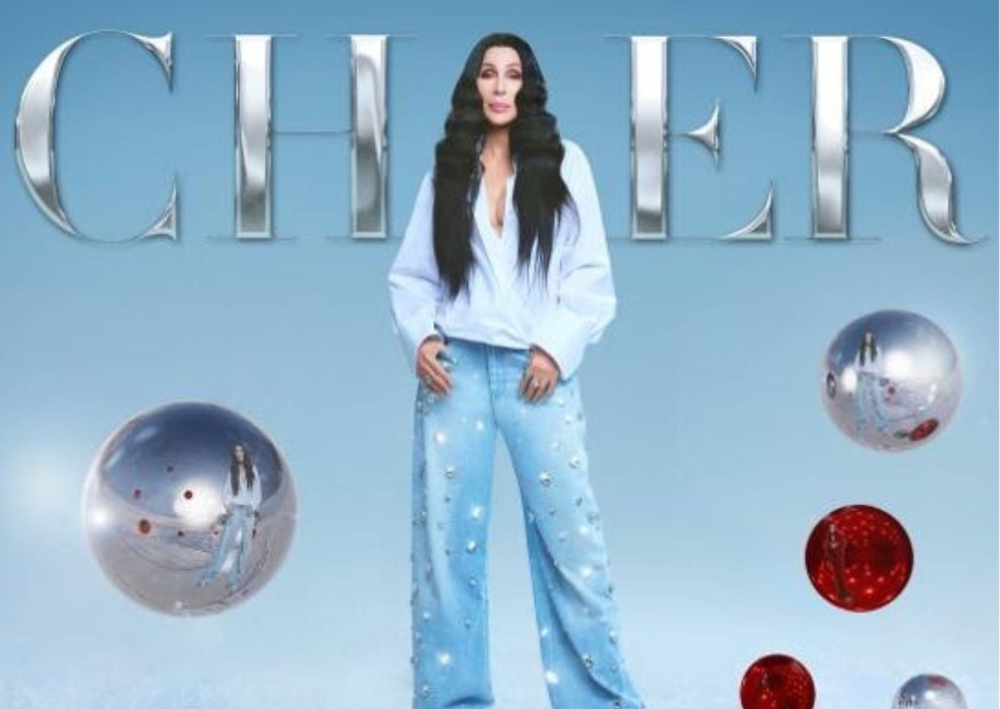

Cher, nos embalos natalinos, lança o primeiro álbum dedicado ao feriado da carreira

Com treze faixas dedicadas exclusivamente ao feriado natalino, sendo 4 delas inéditas, o álbum “Christmas” da cantora Cher, é o primeiro em toda a sua carreira a ser temático a uma data do ano.
Com distribuição nacional pela Warner Music Brasil esse é o primeiro disco a ser lançado pela artista nos últimos 5 anos, e ainda com participações especiais de grandes estrelas do cenário musical pop, como Darlene Love, Stevie Wonder, Michael Bublé, Cyndi Lauper e Tyga.
“DJ Play A Christmas Song”, o primeiro single do álbum, foi escrito por Sara Hudson (Dua Lipa, Katy Perry, Troye Sivan) e sua equipe, que contribuiu com as quatro faixas inéditas do projeto. Gravado principalmente em Los Angeles, nos EUA, e Londres, na Inglaterra, “Christmas” foi produzido pelo colaborador de longa data da artista, Mark Taylor (“Believe”).
A tracklist inclui também clássicos como “What Christmas Means To Me”, com Stevie Wonder, e “Christmas (Baby Please Come Home)”, com Darlene Love, que gravou esta canção pela primeira vez com Phil Spector e Cher, aos 17 anos, cantando como backing vocal. O álbum traz ainda uma versão assombrosa de “Home”, escrita e cantada por Michael Bublé.
“Eu nunca digo isso sobre meus próprios discos, mas estou muito orgulhosa deste. É um dos projetos mais incríveis da minha carreira”, comentou Cher.
Cher também está comemorando o 25º aniversário de seu álbum multi-platina "Believe", com o lançamento de “Believe 25th Anniversary (Deluxe Edition)”, pela Warner Records.

O álbum “Christmas” já está disponível em todas as plataformas de áudio e você pode escutá-lo clicando no link abaixo: